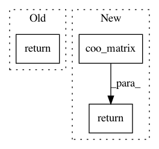

12883ed44bd820e1693819d0a08acaa6d10afd6f,scipy/optimize/_linprog_util.py,,_format_A_constraints,#Any#Any#Any#,72
Before Change
if A is not None:
return _to_lhs_constraint(A, dtype=float, copy=True)
elif sparse_lhs:
return _to_lhs_constraint((0, n_x), dtype=float)
else:
return np.zeros((0, n_x), dtype=float)
After Change
if sparse_lhs:
return sps.coo_matrix(
(0, n_x) if A is None else A, dtype=float, copy=True
)
elif A is None:
return np.zeros((0, n_x), dtype=float)
else:
return np.array(A, dtype=float, copy=True)
In pattern: SUPERPATTERN
Frequency: 4
Non-data size: 3
Instances
Project Name: scipy/scipy
Commit Name: 12883ed44bd820e1693819d0a08acaa6d10afd6f
Time: 2019-04-25
Author: kaistriega@gmail.com
File Name: scipy/optimize/_linprog_util.py
Class Name:
Method Name: _format_A_constraints
Project Name: automl/auto-sklearn
Commit Name: e92e45a59894ee9da96bdf044edb51e8a916185d
Time: 2017-11-17
Author: feurerm@informatik.uni-freiburg.de
File Name: autosklearn/pipeline/implementations/OneHotEncoder.py
Class Name:
Method Name: _transform_selected
Project Name: scipy/scipy
Commit Name: a7ff52f2e7c84b8e5c3f110dbee792f1962f526b
Time: 2014-01-28
Author: joel.nothman@gmail.com
File Name: scipy/sparse/data.py
Class Name: _minmax_mixin
Method Name: _min_or_max_axis
Project Name: befelix/safe_learning
Commit Name: 87a3f9e47cbe9f8786d2e3907c1bd6d769dcdd22
Time: 2016-09-29
Author: fberkenkamp@gmail.com
File Name: safe_rl/triangulation.py
Class Name: Delaunay
Method Name: gradient_at